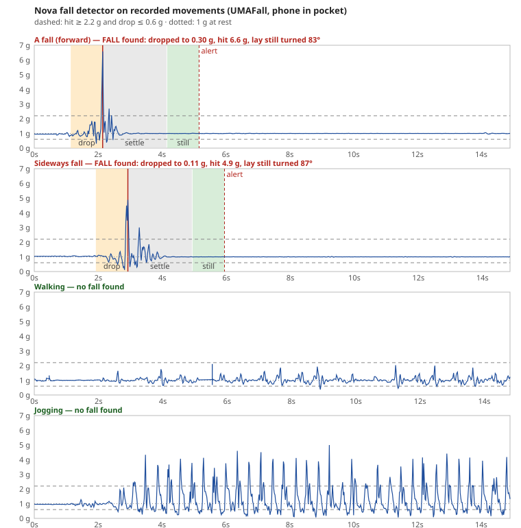
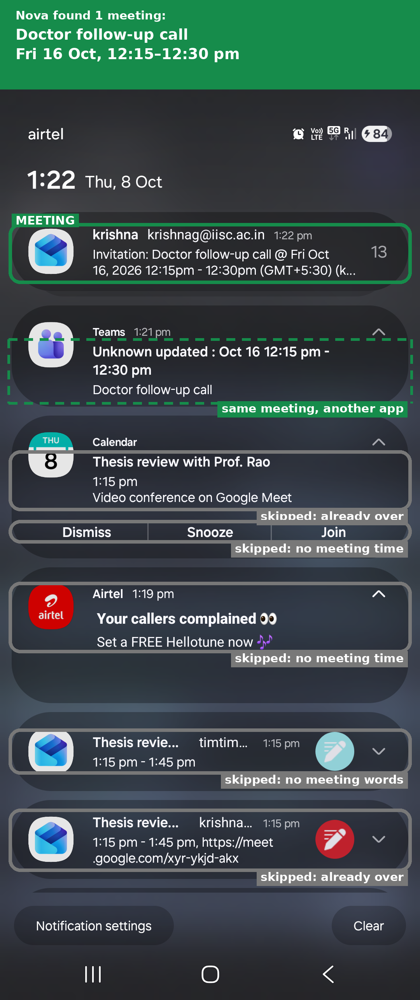
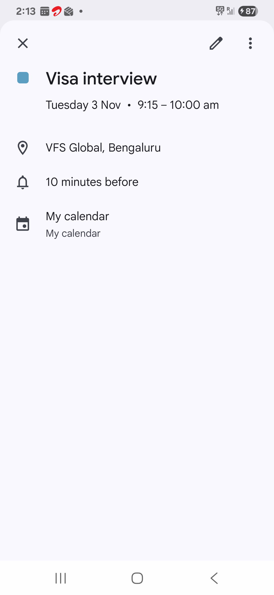
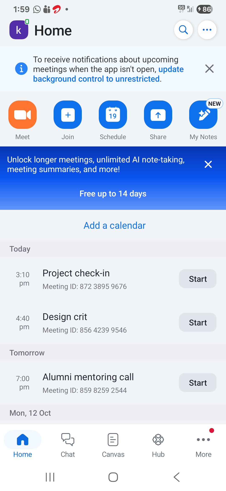
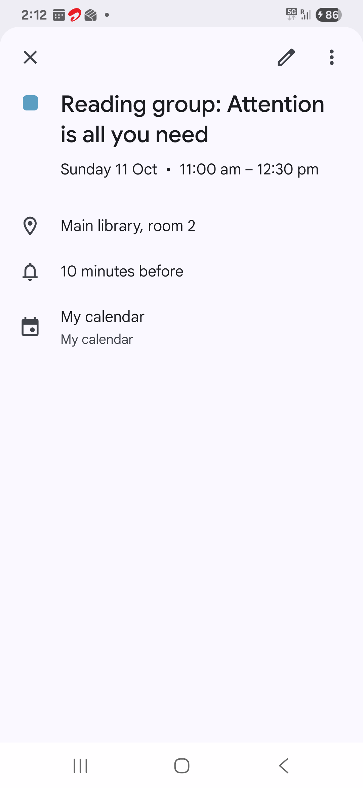
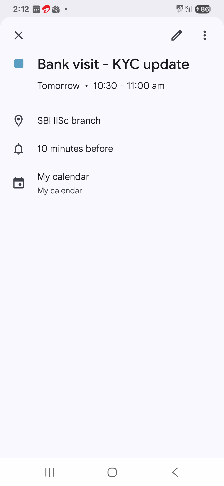
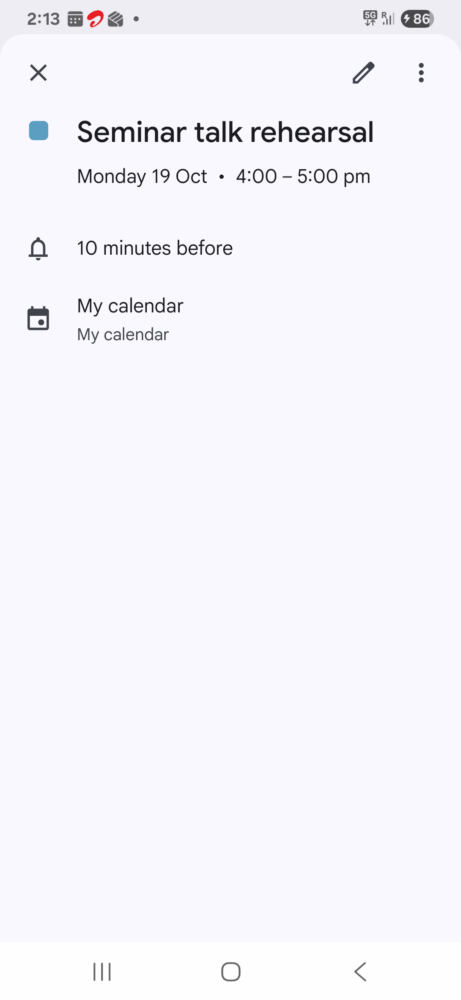
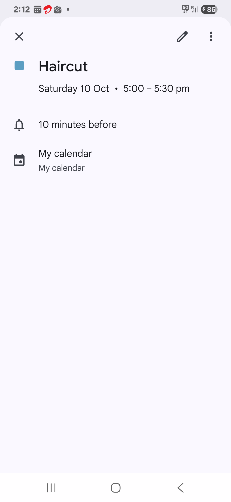
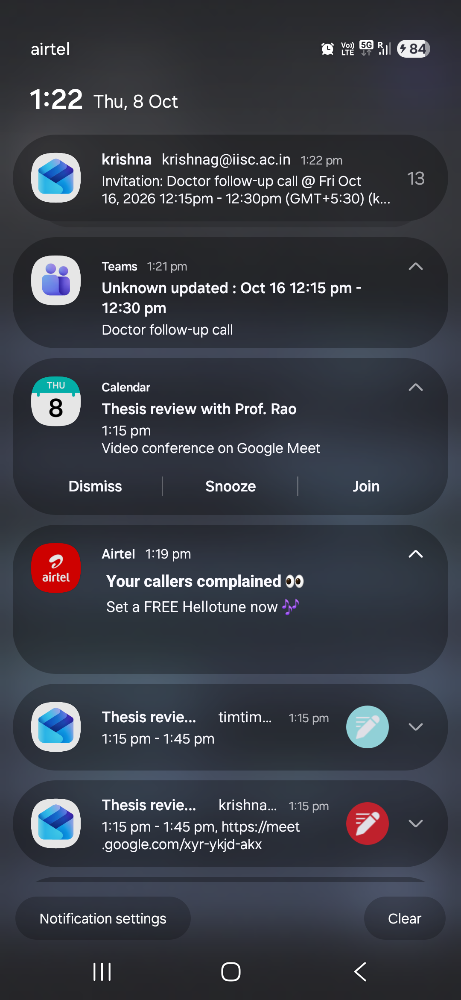

A fully local Android voice assistant: how it is built, why, how well it works, and a live demonstration. Every number on this page was measured in the project.
Nova is a voice assistant that runs entirely on the phone, with no server and no internet. Speech goes to whisper base.en, then to a FunctionGemma 270M model fine-tuned with LoRA on 20k examples and quantised to INT8. The model only proposes tool calls. ToolGate validates them, asks for confirmation and checks permissions before one of 43 tools runs. It reaches 94.9% exact tool calls at about 0.9 s per request on a mid-range phone, and it also turns screenshots into calendar events, checks messages for scams, and detects falls with an SOS alert.
The main idea: a small model is enough for this job when deterministic code checks its output and handles the easy cases without it.
Everything below runs on the phone (Samsung, MediaTek MT6835, Android 15, CPU only). Three paths share one safety layer: a spoken or typed request, a screenshot, and the motion sensor.
Border:deterministic ruleslanguage modelsafety gate (the only way to act)
CommandText / SpokenForms pick the reading that makes sense as a command (“check my male” → mail).SosRule (“Help!”, “I've fallen”);
the FastPath for fixed-form commands (alarms, timers, flashlight, settings, opening apps, calculator, reminders, named timers, note search,
household ledger); ChainRules for two-step requests in trained shapes; ContextRules for follow-ups (“what about tomorrow?”,
“aur kal ka?”), “undo that” and “that's wrong”. Rules answer 44% of requests in ~0.1 s, with 100% precision on the test rows they claim.
When a rule understands a request but can't do it as said (a reminder with no clear time), Nova says what is missing instead of guessing..litertlm
(290 MB) for LiteRT-LM. Its prompt holds the 31 model-visible tool descriptions (~2.3k tokens) and must match the training prompt exactly.
Prefill of that prompt is the main cost, cut with a 3072-token KV cache, 2 threads and read-ahead: ~0.9 s per request.CutCall repairs the call markup so it is never read out; CallCheck runs a
call only if the request names that tool's job; NameResolver matches contacts, places and apps by sound against the phone's own data
(“Rear Row” → “Riya Rao”, or “isn't in your contacts”); ArgumentFixer / DateNormalizer correct dates and drop values that
are not in the user's words (no invented phone numbers or email bodies).ToolValidator checks every argument against the schema in tools.json and rejects
unknown tools; RepeatGuard stops loops; ConfirmationPolicy asks a fixed template (“Call Riya Rao?”), never
model text, and reads the answer from closed yes/no word lists; PermissionChecker asks Android for what the tool needs. Only then does
the executor run the tool.CardSegmenter and RealLayouts rebuild the notification cards, calendar detail pages and Zoom lists from the text boxes;
OcrRepair fixes characters only inside time and date tokens (“1O:3O”) and flags the event when it does.The same reader also finds receipts, bills and school notices, phone numbers and addresses. The scam check scores message text, links and UPI QR codes (it says whom a QR code pays) on the phone.
| Component | Technology | Size | Speed on the phone |
|---|---|---|---|
| Wake word | sherpa-onnx keyword spotting, int8 | 5.25 MB | 0.06 s of CPU per second of audio |
| Voice activity | Silero VAD (whisper.cpp) | 0.9 MB | end of speech ~0.85 s |
| Speech to text | whisper.cpp, base.en q5_1 | 60 MB | median 1.72 s per command |
| Intent gate | BERT-small, fp16, ONNX Runtime | 57.6 MB | after the rules, before the model |
| Tool caller | FunctionGemma 270M + LoRA, INT8, LiteRT-LM | 290 MB | ~0.9 s per request |
| OCR | ML Kit text recognition (bundled) | in the APK | ~0.34 s per image |
| Text to speech | Android TTS | system | ~0.19 s to start |
| App | Kotlin, 43 tools, 413 unit tests per build variant | APK 81.7 MB | peak memory ~630 MB |
| Decision | Why |
|---|---|
| Small 270M model, on-device, INT8 | Privacy and offline use. It has to fit a mid-range phone's memory and answer in under a second. |
| The model proposes, ToolGate disposes | A model can be wrong or invent arguments. Validation, confirmation and permissions are deterministic code the model can't get around. |
| Rules around the model: FastPath + ArgumentFixer | Fixed-form commands don't need a model. Rules are faster and exact, and they lift accuracy from 80.5% to 94.9%. |
| Messages and emails open as prefilled drafts | Nova never sends a message on its own. The fall alert is the one deliberate exception. |
| CPU, not GPU | Measured on this phone: the GPU was not faster. The cost is the ~2.3k-token prompt, cut with a smaller KV cache (3072), 2 threads and read-ahead. |
| whisper base.en over tiny.en and Moonshine | Measured: word error rate 14.0% vs 20.2% for tiny.en, and Moonshine was less accurate on these commands. It costs ~2.2× the time but stays at 1.7 s per command. |
| Screenshot → calendar: always a review screen | A wrong event does more harm than a missed one, so the headline metric is 0 silently wrong. |
| Fall detection by physics rules, not ML | Explainable thresholds, no training data on the phone, testable on a public dataset. The alert texts and calls a contact without a yes, but never 112. |
| “Undo” needs a confirmation | It is the one place Nova deletes anything. |
| What | Measured |
|---|---|
| Exact tool calls, 1,520 test rows: model → + ArgumentFixer → + FastPath | 80.5% → 91.4% → 94.9% |
| End to end on the phone, typed, 313 commands | 289/313 (92.3%), median 0.9 s |
| End to end typed, held-out 185 commands (new people's wording) | 181/185 (97.8%), 0 confirm-only actions without a yes |
| End to end by voice, held-out 185 | 153/185 (82.7%) |
| Speech to text | whisper base.en word error rate 14.0% (tiny.en 20.2%); phone median 1.72 s per command |
| Wake word | 144/150 clips; 27/30 live Indian-English; 0 false wakes in 1.87 h |
| Rules: voice rules, household, follow-ups/undo (held out) | 90/90, 73/73, 72/72, 0 wrong |
| Fall detection (UMAFall, 6 held-out people) | 54/56 falls, 4/149 false alarms |
| Voice SOS false triggers | 0 of 21,911 recorded commands |
| Screenshot → calendar (real held-out screenshots, phone OCR) | 97.7%, 0 silently wrong; notification screenshots 15/15 |
| Scam check (held out) | 24/24 caught, 0/21 false alarms |
| Memory / storage / APK | peak ~630 MB; models ~390 MB; APK 81.7 MB (ONNX Runtime is 34 MB of it) |
It has to fit and run on a mid-range phone with no server. At INT8 it answers in ~0.9 s. The accuracy gap is closed by deterministic rules (FastPath, ArgumentFixer), which take it from 80.5% to 94.9% exact.
It is built for function calling and small enough for a phone. Fine-tuning teaches it this app's 31 tools and their argument formats.
LoRA on the Nova-20k dataset (20k request → tool-call examples), then merged into the base weights and exported as an INT8
.litertlm file for LiteRT-LM. The prompt at runtime must match the training prompt exactly, or accuracy collapses.
INT8 makes the model small and fast enough for the phone's CPU. The accuracy numbers above are measured on the INT8 model as deployed, not the fp32 one.
Prefill: reading the ~2.3k-token prompt with all the tool descriptions. It was cut with a KV cache of 3072, 2 threads and read-ahead. The GPU was measured and rejected. Shorter descriptions need a retrain.
It only proposes. ToolGate validates every argument against the catalogue, rejects unknown tools, and asks “yes/no” for calls, messages and payments. The answer is parsed from a closed word list, never by the model. Android permissions are checked, and the agent loop has step and call limits. No benchmark ever ran a confirm-only tool without a yes.
CallCheck only runs a model call if the request names that tool's job. ArgumentFixer drops values that aren't in the user's words.
Contacts come from the address book by name, never from the model.
Only web tools (weather, search, maps) use the internet. ML Kit's usage-log upload was removed from the manifest, and there is a local-only switch with a log of every network request.
Both were measured on the project's commands. whisper was more accurate, and base.en beat tiny.en (14.0% vs 20.2% word error rate).
sherpa-onnx keyword spotting, with “HEY NOVA” and “HE NOVA” spellings for Indian-English voices. It listens while the phone is unlocked with the screen on: 144/150 recorded clips, 27/30 live Indian-English voices, and 0 false wakes in 1.87 hours of ordinary speech.
Partly. Follow-ups like “aur kal ka?” are handled by rules. Speech recognition is English (base.en).
Physics: a drop below 0.6 g, a hard hit above 2.2 g, then lying still at an angle at least 65° from before. Thresholds were chosen on 13 people from the UMAFall dataset and tested once on 6 others: 54/56 falls, 4/149 false alarms. Jogging hits 4–5 g many times but never lies still afterwards.

A false alarm would reach emergency services. Nova asks “Are you OK?” (by voice and with buttons). If there's no answer in 45 s, it texts and calls a family contact.
On the dataset, mostly from pulling the phone out to make a call, so a “fall” is ignored when the screen was just switched on or a call is active.
Dev sets for tuning, held-out sets run once per milestone. The 185-command held-out set uses new people's wording. The 1,520-row test split shares templates with training, so the held-out gold sets are the numbers to trust.
The same Kotlin sources run on the laptop (JVM) with the real model, so the laptop runs and the phone runs agree, and every held-out number can be re-run in about 20 seconds. Voice was tested with synthetic voices plus live checks on the phone. There are 413 unit tests per build variant.
Claude Code wrote and ran most of the code, with me deciding the direction. Whisper base.en, the BERT tool gate, the Moonshine comparison and
fall detection were my calls. Three files kept it honest: a frozen PLAN.md, a SPEC.md roadmap, and an
Insights.md log of every finding and decision. Every change updated them and was committed.
The whole development transcript is published with the project.
Measure before deciding: GPU, Moonshine and prompt length were all decided by measurements, not assumptions. And around a small model, deterministic code is where reliability comes from.
Run on the phone in airplane mode: everything below works with no internet.
| # | Request or action | What happens | Measured |
|---|---|---|---|
| 1 | Set an alarm for 7:30 am | Alarm set in ~0.1 s, by rules | 100% precision on 767 test requests |
| 2 | What's 17 times 23 | 391 | voice rules 90/90 |
| 3 | Set timers for tea ten minutes and laundry 1 hour | Two named timers | 90/90 |
| 4 | Call Mom → no | Nova asks first; nothing is called | 0 actions without a yes |
| 5 | Turn on Bluetooth, Restart my phone | Settings open; restart declined with where to do it | 85/85 |
| 6 | What's on my calendar today? → What about tomorrow? | The follow-up is answered for the new day | 72/72 |
| 7 | A meeting screenshot → Nova | The event filled in on a review screen → Add to calendar | 97.7%, 0 silently wrong |
| 8 | Fall detection → recorded fall → I'm OK | Fall found; “Are you OK?”; cancelled | 54/56 falls; “I'm OK” heard 240/240 |
| 9 | Recorded fall, no answer (test mode) | Siren at 30 s; at 45 s the SMS and call it would make | sends nothing in test mode |
| 10 | Help! → I'm OK | SOS countdown, cancelled | 0 of 21,911 other commands start it |

Nova's result on a real notification screenshot, recorded on the phone (its OCR, then the parser), drawn on the image. Tap to enlarge.
Across all 15 notification screenshots with a meeting: 15/15 exact, 0 wrong, none invented. Download the plain screenshot to try it in the app.
Real screenshots of test meetings, read exactly by the phone's OCR. Each file keeps its capture time (8 Oct), so “Today” and “Tomorrow” resolve as they did when taken. In Nova: Inbox → Pick a screenshot. Tap a picture to enlarge or download it.

Visa interview
Tue 3 Nov, 9:15–10:00 am

3 meetings in one shot
Zoom list

Reading group
Sun 11 Oct, title on two lines

Bank visit
“Tomorrow” = 9 Oct

Seminar talk rehearsal
Mon 19 Oct

Haircut
Sat 10 Oct

Notifications
Doctor follow-up call
The laptop runs the app's own Kotlin sources: scripts/viva_check.sh re-scores every held-out number above in about 20 seconds
(full adds the 185 typed commands through the deployed model, 181/185), and scripts/nova_console.sh is Nova typed on the laptop.